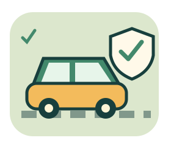

先懂一點，再穩一點。
多拉絕對不是三寶之汽車知識跟
道路安全小學堂
右腳不是開關，綠燈不是通行證。
把日常的「應該吧？」換成有根據的判斷。

今天先補哪一課？
台灣一般小客車情境・無倒數・可隨時查圖鑑
每題送出後揭曉解說；「還不確定」會保留為待複習，不猜也能學。每輪選項與題序重排。
遊戲名稱是玩笑，不是對任何人的駕駛評鑑。本頁是知識練習，不是駕訓、考照或維修指示；不能邊開車邊玩。法規依台灣公開資料整理（2026-10-28），實際以現場指揮、標誌標線、現行法規及該車手冊為準。只留在分頁記憶體，不儲存、不上傳。
畫面為簡化示意，不是正式標誌尺寸或實車儀表。
SAFE IS A HABIT
這輪學到了！
這只是本輪首次選擇紀錄，不代表駕駛能力或人格評價。打開每題可重讀正確觀念與來源。
油門小實驗 · 右腳不是開關
慢慢推動，或突然拉高，比較這個示意模型的變化。沒有真實速度、不考反應、不教固定踏板百分比。
目前收油。收油不保證車輛停止；需要停車時仍須適當煞車。
小車位置只代表這次示意輸入大小，並非速度或煞停距離。不同車款、坡度、檔位與電動車模式反應不同，實車依手冊及合格教練指導。低速停車、路口接近與跟車，都以能安全停住為優先。
五油三水圖鑑 · 先認功能，再查自己的車
這是傳統保養記憶法，不是每台車的必備加注清單，也不是實車位置圖。電動車、EPS、免保養電瓶的需求不同；不自行拆開高壓電池或高溫壓力蓋。
選一項看功能與注意事項。
號誌口袋卡 · 不只看顏色
來源、適用範圍與查證
法規與車主手冊用途不同：法規是道路規則；廠牌手冊是特定車款保養參考，不能把某車的胎壓、規格或週期套用所有車。題目標示「虛構手冊／標籤」的車輛設定只供閱讀判斷。
油門平順控制與霧中近光等安全建議不冒充逐字法條。火災資料採 USFA 的物理安全原則，台灣求援號碼使用 119。各題解說連到對應來源；不是政府官方教材。